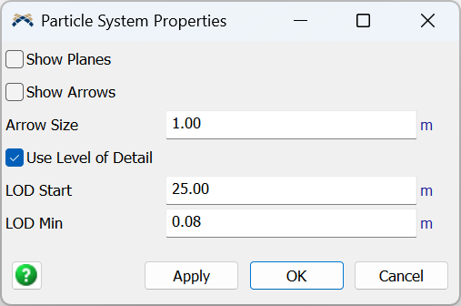

The properties panel for the model's single Particles.System. It opens when you double-click the Particle System in the Toolbox. The system is created automatically when you drop the first emitter, so you rarely need to open this panel.
Every setting here controls how emitters are drawn, not how the particles behave: the editing handles shown on each emitter and the distance-based level-of-detail thinning. Changing them never alters particle motion or appearance, only the picture in the 3D view.

| Show Planes | Show each emitter's region outline (the wireframe emission shape). |
| Show Arrows | Show each emitter's aim-direction arrow handle. |
| Arrow Size | World size of the aim-arrow handles. Display only; it has no effect on particles. |
| Use Level of Detail | When on, far emitters emit fewer particles to cut draw cost. |
| LOD Start | Distance within which an emitter keeps full detail; thinning begins past it. |
| LOD Min | Lowest the thinning can go (0 to 1): how sparse a far emitter may get. |
For the same settings as scripted properties (plus the live-particle cap and the read-only performance stats), see the Particles.System API reference.